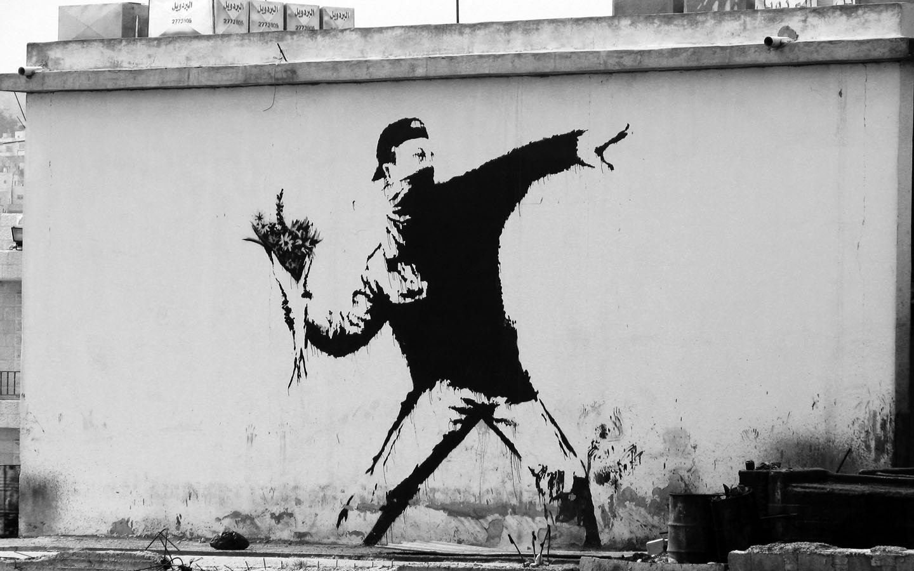

TX
Doing stuff.
Core Concepts:
- when you sign/do stuff with a public key crypto system you prove that it came from your address.
- you also have assurance that your key or a 51% attack are needed to compromise that assurance
TODO / Ideas:
- the part where thread messages come in at different times could be good to show why nonces are important: https://doc.rust-lang.org/book/ch16-02-message-passing.html
Transaction (TX):
A transaction is a digitally signed message authorizing some particular action associated with the blockchain. In a currency, the dominant transaction type is sending currency units or tokens to someone else; in a database actions like registering domain names, sending messages, or posting to a social feed would also be valid transaction types. Essentially, a state is an ordering of data, a transaction is a request to change the state of that data, and the state transition funciton determines how that happens.
3.1. The Transaction
The basic method for Ethereum accounts to interact with each other. The transaction is a single cryptographically signed instruction sent to the Ethereum network. There are two types of transactions: message calls and contract creations. Transactions lie at the heart of Ethereum, and are entirely responsible for the dynamism and flexibility of the platform. Transactions are the bread and butter of state transitions, that is of block additions, which contain all of the computation performed in one block. Each transaction applies the execution changes to the machine state, a temporary state which consists of all the required changes in computation that must be made before a block is finalized and added to the world state.
- https://github.com/chronaeon/beigepaper/blob/master/beigepaper.pdf
TX Fees
Every transaction is required to include a tx fee. Miners have the choice of including the transaction and collecting the fee or not. This is to prevent someone from spamming the network or creating a DoS attack.
Code
extern crate rand;
use rand::prelude::*;
use std::collections::HashMap;
use std::collections::hash_map::DefaultHasher;
use std::hash::Hasher;
/// RSA STUFF ///
// greatest common divisor
fn gcd(a: i32,
b: i32) -> i32 {
let (mut a, mut b) = if a > b {
(a, b)
} else {
(b, a)
};
while b != 0 {
let r = a % b;
a = b;
b = r;
}
a
}
// lowest common multiple
fn lcm(a: i32,
b: i32) -> i32 {
let lcm = (a * b) / gcd(a, b);
lcm
}
// Carmichael's totient function
// https://en.wikipedia.org/wiki/Carmichael_function
fn ctf(a: i32,
b: i32) -> i32 {
lcm((a - 1), (b - 1))
}
// slowly check if a number is prime
fn slow_prime_check(num: i32) -> bool {
if num < 0 {
println!("number must be greater than 0");
}
if num > 1000000 {
println!("number cannot be greater than 1000000");
}
for i in 2..num{
if num % i == 0 {
return false
}
}
true
}
// slowly yet randomly generate a prime number within a range
fn prime_gen(low: i32,
high: i32) -> i32 {
for i in 0..1000000 {
let p = thread_rng().gen_range(low, high);
if slow_prime_check(p) {
return p
}
}
0
}
// generate a public key within a range
fn pub_key_gen(min: i32,
max: i32) -> i32 {
let pub_key = prime_gen(min, max);
assert!(max % pub_key != 0);
pub_key
}
// slowly find the modular multiplicative inverse of a prime
fn slow_mmi(ctf_pq: i32,
pub_key: i32,
max: i32)-> i32 {
for i in 2..max {
if (i * pub_key) % ctf_pq == 1 {
return i
}
}
println!("Try larger search?");
0
}
// create a private key from a public key and other data
fn priv_key_gen(ctf_pq: i32,
pub_key: i32) -> i32 {
let priv_key = slow_mmi(ctf_pq, pub_key, 100000);
priv_key
}
// Because... Rust.
fn exp_mod(input: i32,
power: i32,
modulo: i32) -> i32 {
let mut out = (input * input) % modulo;
// because the first iter of out took 2 off the base
for i in 0..power-2 {
out = (out * input) % modulo;
}
out
}
// toy RSA function
fn toy_rsa(input: Vec<i32>,
key: i32,
modulo: i32) -> Vec<i32> {
let output = input.iter()
.map(|x| exp_mod(*x, key, modulo))
.collect();
output
}
// convert string to Vec<i32>
fn s2v(input: String) -> Vec<i32> {
let output: Vec<i32> = input.as_bytes()
.iter()
.map(|x| *x as i32)
.collect();
output
}
// convert Vec<i32> to string
fn v2s(input: Vec<i32>) -> String {
let output_u8: Vec<u8> = input.iter()
.map(|x| *x as u8)
.collect();
let output_string = String::from_utf8(output_u8).unwrap();
output_string
}
/// END RSA STUFF ///
// turn stuff into a &[u8] slice
unsafe fn any_as_u8_slice<T: Sized>(p: &T) -> &[u8] {
::std::slice::from_raw_parts(
(p as *const T) as *const u8,
::std::mem::size_of::<T>(),
)
}
// hash &[u8] slices into hex Strings
fn hash_u8(stuff: &[u8]) -> String {
let mut hasher = DefaultHasher::new();
hasher.write(stuff);
let digest = hasher.finish();
let hex_digest = format!("{:#X}", digest);
hex_digest
}
#[derive(Debug, Clone)]
struct TX {
sender: i32,
receiver: i32,
tx_amount: f32,
nonce: i32,
}
#[derive(Debug, Clone)]
struct SignedTX {
tx: TX,
signature: Vec<i32>,
}
// NOTE: if the tx uses an invalid signature
// there is a high likelihood that it will produce
// invalid utf8, and thus this function will crash
// when v2s() tries to turn the Vec<i32> into a String
fn check_signed_tx(signed_tx: SignedTX,
modulo: i32) -> bool {
let tx_as_bytes = unsafe {
any_as_u8_slice(&signed_tx.tx)
};
let tx_hash = hash_u8(tx_as_bytes);
println!("tx hash: {}", tx_hash);
let decrypted_tx_hash_sig = toy_rsa(signed_tx.signature,
signed_tx.tx.sender,
modulo);
let decrypted_tx_hash = v2s(decrypted_tx_hash_sig);
println!("decrypted tx hash: {}", decrypted_tx_hash);
match tx_hash == decrypted_tx_hash {
true => true,
false => {
println!("not valid tx");
return false
},
}
}
// Rollin, rollin, rollin...
fn main() {
// Setup RSA To Create Test Accounts
// fix p and q to generate keys
let p = 61; //prime_gen(5, 100);
let q = 53; //prime_gen(5, 100);
assert!(p > 0);
assert!(q > 0);
// m is now a constant we can use for all keys
// that share the same p and q setup
let m = p * q; //3233
///////////////////////////////////////
// Generated Keys from fixed p and q //
// - SENDER: pub: 773, priv: 557 //
// - RECEIVER: pub: 179, priv 719 //
///////////////////////////////////////
let account1_pub_key = 773;
let account1_priv_key = 557;
let account2_pub_key = 179;
let account2_priv_key = 719;
// if you want to generate more keys
//let ctf_pq = ctf(p, q);
//let pub_key = pub_key_gen(1, ctf_pq);
//let priv_key = priv_key_gen(ctf_pq, pub_key);
/*
// print RSA params to capture keys that work
println!("p: {}", &p);
println!("q: {}", &q);
println!("m: {}", &m);
println!("ctf_pq: {}", &ctf_pq);
println!("pub_key: {}", &pub_key);
println!("priv_key: {}", &priv_key);
*/
// TX Hashing
let tx = TX {
sender: 86, //account1_pub_key,
receiver: account2_pub_key,
tx_amount: 1000.0,
nonce: 345,
};
let tx_bytes: &[u8] = unsafe {
any_as_u8_slice(&tx)
};
println!("tx: {:?}", &tx_bytes);
let tx_hash = hash_u8(tx_bytes);
println!("tx hash: {:#?}", &tx_hash);
// TX Signing
let message = tx_hash.clone();
let m2nums = s2v(message.clone());
let ciphertext = toy_rsa(m2nums.clone(), account1_priv_key, m);
println!("\n/// Testing ///");
println!("message: {:?}", &message);
println!("message as nums: {:?}", &m2nums);
println!("ciphertext: {:?}", &ciphertext);
// Recover the TX hash from the signed ciphertext
//let decrypted = toy_rsa(ciphertext.clone(), priv_key, m);
//let message2 = v2s(decrypted.clone());
//assert_eq!(message, message2);
//println!("decrypted nums: {:?}", &decrypted);
//println!("decrypted message: {}", &message2);
// Add signed TX hash to a SignedTX
let signed_tx = SignedTX {
tx: tx,
signature: ciphertext,
};
println!("\n{:#?}", &signed_tx);
// Check that the SignedTX is valid
// NOTE: if the tx uses an invalid signature
// there is a high likelihood that it will produce
// invalid utf8, and thus this function will crash
// when v2s() tries to turn the Vec<i32> into a String
let check_tx = check_signed_tx(signed_tx, m);
println!("is the signature authentic?\n{}", check_tx);
}
But wait... there' smore
- https://en.wikipedia.org/wiki/Digital_signature
- https://en.wikipedia.org/wiki/Digital_Signature_Algorithm
- https://github.com/ethereum/wiki/wiki/Glossary